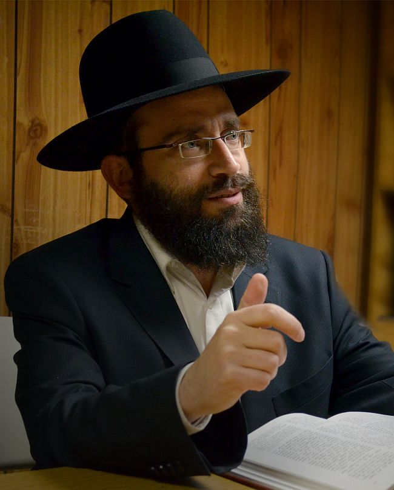

המוכרחים
ב״דבר מלכות״ השבועי, מחדש הרבי כי סיימנו להכין את העולם לחבלת פני משיח, וכעת ״נסתיימה ונשלמה עבודת הבירורים״, ולכן צריכים לעבור ל״עבודה מיוחדת להביא ההתגלות בפועל בעולם״ »כדי להבין את חידושו של הרבי ב׳דבר מלכות׳ של השבוע - פנינו אל הרב שניאור זלמן הרצל, משפיע בשכונת קראון הייטס, ומחבר ספרים בשלל נוש
ב״דבר מלכות״ השבועי, מחדש הרבי כי סיימנו להכין את העולם לחבלת פני משיח, וכעת ״נסתיימה ונשלמה עבודת הבירורים״, ולכן צריכים לעבור ל״עבודה מיוחדת להביא ההתגלות בפועל בעולם״ »כדי להבין את חידושו של הרבי ב׳דבר מלכות׳ של השבוע - פנינו אל הרב שניאור זלמן הרצל, משפיע בשכונת קראון הייטס, ומחבר ספרים בשלל נושאים בתחום הגאולה ומלך המשיח, והצגנו בפניו שאלה שרבים שואלים לאחר לימוד השיחה השבועית: מכיוון שעדיין לא זכינו לגאולה האמיתית והשלימה, ויש עדיין רע בעולם ־ כיצד אפשר לומר שהסתיימה עבודת הבירורים?

וכך, ב’דבר מלכות’ לפרשת וישלח, לאחר שהרבי מסביר שיעקב אבינו סיים בזמנו את עבודת הבירורים שלו, ואף סבר שגם עשו סיים את עבודתו, ואפשר ללכת יחדיו לקראת הגאולה; אלא שבזמנו של יעקב עניין זה לא בא בפועל בעולם,
- מבשר הרבי, שלאחרי מעשינו ועבודתנו במשך כל הדורות, “כבר נגמרו ונשלמו כל הענינים גם מצד (וב)העולם, כפי שהודיע והכריז שכבר נשלמו כל עניני העבודה, גם “צחצוח הכפתורים”, והכל מוכן לביאת המשיח”.
צחצוח הכפתורים (או באידיש - פוצן די קנעפלעך) הוא משל שאמר הרבי הריי”צ בשמחת תורה תרפ”ט, ובין הדברים התבטא שיהודי רוסיה מתכוננים לקבלת פני משיח, והמשיל את עבודתם לצחצוח בגדי הצבא וצחצוח כפתורי הבגדים (“זיי פּוצן שוין דעם מונדיר צו גיין אַנטקעגן משיח’ן זיי פּוצן די קנעפּלעך פון די בגדים צו גיין אַנטקעגן משיח’ן”).
עם השנים הפך צמד המילים הללו למעין קוד לעבודה האחרונה שנדרשת לקראת הגאולה, ופעמים רבות התבטא הרבי ש”נשאר רק לצחצח את הכפתורים”. בשבת פרשת שמות תשמ”ז, התבטא הרבי לראשונה, שבימינו אלו נסתיימה גם העבודה של צחצוח הכפתורים, ומאז חזר על קביעה זו כמה פעמים בשנת תשמ”ח, וכן בשנת תנש”א.
אבל השבוע, בדבר מלכות של פרשת וישלח, נראה שהרבי לוקח את הביטוי הזה צעד אחד קדימה, ומעניק לו משמעות מעשית בעבודת ה’:
“ומזה מובן שהמשך העבודה שלאחרי זה (כל זמן שמשיח צדקנו מתעכב מאיזו סיבה (בלתי ידועה ומובנת כלל)) אינו “עבודת הבירורים” (שהרי כבר נסתיימה ונשלמה עבודת הבירורים), אלא עבודה מיוחדת להביא ההתגלות בפועל בעולם”.
כדי להבין את חידושו של הרבי ב’דבר מלכות’ של השבוע - פנינו אל הרב שניאור זלמן הרצל, משפיע בשכונת קראון הייטס, ומחבר ספרים בשלל נושאים בתחום הגאולה ומלך המשיח, והצגנו בפניו שאלה שרבים שואלים לאחר לימוד השיחה השבועית:
בתורת החסידות מוסבר, שעיקר עבודת בני ישראל בזמן הגלות הוא עבודת הבירורים, וזהו התוכן של כל קיום התורה והמצוות - להפריד ולברר את הטוב מהרע, וכאשר יושלם הבירור תגיע הגאולה. לאור זאת, שואלים רבים: מכיוון שעדיין לא זכינו לגאולה האמיתית והשלימה, ויש עדיין רע בעולם - כיצד אפשר לומר שהסתיימה עבודת הבירורים?
נקודת המוצא להבנת הנושא היא, שכאשר מדובר בעניינים רוחניים - ההבנה שלנו מוגבלת מאוד, ורק הרבי, משה רבינו שבדור, יכול לגלות לנו מה התפקיד שלנו בעת הנוכחית. הרבי רואה את הדברים כפי שהם לאמיתתם, והוא מגלה לנו מה הקב”ה רוצה מאיתנו כעת.
בשבת פרשת שמיני תשל”ד (שהוגהה ונדפסה בלקו”ש חלק כ”א, שיחה לפרשת בשלח), הביא הרבי את דברי חז”ל על הפסוק “ויסע משה את ישראל” - שמשה “הסיען בעל כרחן”, וביאר שלאחר שמשה הסביר לבני ישראל - לפני יציאת מצרים - שעליהם לשאול ממצרים כלי כסף וכלי זהב על מנת לברר את ניצוצות הקדושה מהכסף והזהב של מצרים, הבינו בני ישראל שגם ‘ביזת הים’ היא חלק מעבודת הבירורים, וביודעם עד כמה חשובה עבודת הבירורים היו מונחים בזה בכל מהותם.
וזהו הפירוש הפנימי ב”הסיען בעל כרחם” לא שבני ישראל לא רצו לציית להוראת משה ח”ו, אלא שמצד השכל שלהם - שכל דקדושה - הם חשבו שמכיוון שיש עוד כסף וזהב של המצרים, עליהם להמשיך בעבודת הבירורים, ורק ‘בעל כורחם’ ובקבלת עול הבינו שכאשר הקב”ה אומר שצריכים ללכת למתן תורה, הרי שעבודת הבירורים הסתיימה.
וברגע שהקב”ה קובע שהסתיימה עבודת הבירורים, אין עוד אפשרות להשיג עילוי רוחני על ידי עבודת הבירורים - בדיוק כמו שבכל ימי חג הפסח אכילת המצה פועלת חיזוק האמונה, ואילו ממוצאי פסח והלאה, אין שום משמעות רוחנית לאכילת המצה. כיוון שהקב”ה קבע שבזמן המסויים הזה, אכילת המצה היא מצווה והיא מחזקת את האמונה, אבל יום לאחר החג - אין בזה לא מצווה, ולא חיזוק האמונה.
ומסיק הרבי מכאן הוראה יסודית בעבודת ה’, שמהווה תשובה ברורה לשאלתך אודות ההודעה של הרבי שהסתיימה עבודת הבירורים:
“כאשר יהודי עסוק בעניין של עבודת ה’, עליו להיות מונח בזה בכל חיותו ובכל כוחותיו . . אבל כאשר מקבלים ציווי מהשולחן ערוך, מאתפשטותא דמשה בכל דרא ודרא - שכעת צריך להפסיק את העבודה הזאת, ולעשות עבודה שניה, אז תובעים מיהודי דבר והיפוכו: מצד אחד, ההרגש שלנו לכתחילה הוא שהעבודה השניה היא עניין של “בעל כרחו”, כנ”ל, בהיותו מסור בכל נפשו ומאודו לעבודה הקודמת; אבל לאידך, התנועה הזאת עצמה צריכה להביא אותו לחיות בעבודה החדשה, עד לחיות אמיתית שלמעלה ממדידה והגבלה”.
ובהמשך השיחה אומר הרבי במילים ברורות, שמי שקובע מהי עבודת ה’, הוא משה שבדור, ולכן על יהודי לעסוק בעבודה שהורו לו “עד שהוא מקבל ציווי משולחן ערוך, מאתפשטותא דמשה בכל דרא ודרא, עד לרבי נשיא דורנו - שהיום, או שמהיום עליו לעשות עבודה אחרת”.
כמו בני ישראל במצרים, גם אותנו חינכו כל השנים שתפקידנו הוא עבודת הבירורים, וזה הדבר הכי חשוב. ואנחנו עדיין רואים מולנו את ה’כסף והזהב’ של זמן הגלות, ונראה לנו שיש עדיין מה לברר. אלא שלאחר שהרבי - משה שבדורנו - הודיע לנו שהסתיימה עבודת הבירורים, עלינו לדעת שזאת המציאות, ומרגע זה ואילך אין יותר עבודת הבירורים.
באשר לשאלה אם יש או אין ניצוצי קדושה בקליפות - כמובן שאין לנו מושג בעניינים כאלה, אבל ייתכן שהביאור בזה על דרך הביאור שהרבי עצמו הביא בנוגע לניצוצות הקדושה בכספם של מצרים, לאחר שמשה הורה לבני ישראל לעוזבם ולהמשיך למתן תורה. וכך כותב הרבי בשיחה הנ”ל, בהערה 44:
“ואולי הביאור - שאלו הם ניצוצי הקדושה המוכרחים לקיומם (עד הזמן שיעביר את רוח הטומאה מן הארץ)”.
אם כך, מהי העבודה שלנו היום? בשיחה הרבי אומר רק שכעת יש “עבודה מיוחדת להביא ההתגלות בפועל בעולם”, אך לא מפרט מהי אותה עבודה…
קודם כל ראוי לציין, שבהמשך השיחה (בהערה 112), מוסיף הרבי ומחדש ש”לא זו בלבד שנשלמה העבודה וצריכים לפעול הגילוי בעולם (כנ”ל סעיף י”א), אלא יתירה מזה, שישנו כבר בפועל ובגלוי, וצריכים רק לפתוח את העינים, כי מכבר “נתן לכם . . עינים לראות”.
זאת אומרת: אלפי שנים היינו צריכים להתמודד עם קליפת עשיו, עם הגויים, שהפריעו לקיום התורה והמצוות, וגזרו גזירות שונות נגד היהודים. אבל בשנים האחרונות רואים במוחש שאין גזירות נגד תורה ומצוות. לראשונה מאז חורבן הבית, יהודים יכולים לקיים תורה ומצוות ללא הפרעה, בכל מקום בעולם כולו.
לא זו בלבד שהגויים לא מפריעים, הם אף עוזרים ומסייעים. אפילו ברוסיה, שהייתה סמל לרדיפת היהדות עד לפני חצי יובל - פורחת היום היהדות, ובסיוע פעיל של השלטונות הגויים! גם בתחומים אחרים, כמו ההכרה בכך שארץ ישראל שייכת לעם ישראל, רואים לאחרונה איך שהמפלגה הרפובליקנית שנבחרה להנהיג את ארצות הברית, הוציעה ממצעה את רעיון התעתועים לחלק את ארץ ישראל לשתי מדינות, כל אלו ביטויים למציאות הרוחנית, שהעולם מוכן לגאולה!
כעת מצבנו דומה לאדם שבמשך שנים רבות רכש כרטיס הגרלה בלוטו, והנה יום אחד הכרטיס שלו זכה. מה עליו לעשות לאחר הזכייה? הוא לא צריך ללכת שוב לחנות לרכוש כרטיס הגרלה, אלא פשוט ללכת ולממש את הזכייה, לקבל את הכסף. וזה מה שהרבי אומר לנו: תממשו את הזכייה! קבלו פני משיח!
הגאולה, היא הרי הנישואין של הקב”ה עם כנסת ישראל. וכמו בחתונה, יש את הזמן של ההכנות לחתונה, אלו הם השלבים בהם עובדים על כל הפרטים של החתונה, מזמינים צלם, קייטרינג וכדומה, עד לפרטים הקטנים. ואז מגיע סוף סוף רגע החתונה. הכל נמצא, החתן והכלה נמצאים, וצריכים רק לקבל את פניהם.
מה זה אומר תכל’ס, מה עלינו לעשות כעת?
דברי תורה עניים במקום אחד, ועשירים במקום אחר. בשיחה כאן הרבי לא מפרט מהי העבודה הנדרשת היום, אבל כמה שבועות קודם לכן, בשיחה שפתחה את כינוס השלוחים, אמר הרבי דברים דומים - שהסתיימה עבודת השליחות, וכעת מתחילה עבודה חדשה. ושם הרחיב הרבי מעט יותר, ואמר שהעבודה כיום היא “להיות מוכנים בפועל לקבלת פני משיח צדקנו בפועל ממש”.
משל לאדם שבמשך שנים מצפה שחברו יבוא אליו לביקור. הוא מתקשר אליו מידי יום ושואל מתי יבוא. והנה מגיע הרגע, והחבר בעצמו מודיע שהוא מגיע. ברור, שמרגע זה ואילך אין טעם להמשיך להתקשר ולשאול מתי יבוא, אלא צריכים להתכונן לבואו של האורח.
וכיצד מתכוננים? דבר ראשון: סור מרע. מסלקים את כל הדברים שלא מתאימים לאורח הנכבד. ודבר שני: עשה טוב. מביאים לבית את כל הדברים שהאורח אוהב. כדי שכאשר הוא יגיע, הוא יהנה לשהות אצלנו.
מה משיח אוהב לראות? איך הוא רוצה לראות אותנו?
כמובן, שהבסיס הוא שמירה בהידור על כל התורה והמצוות, כפי שהם מוארים בתורת החסידות, וכלשונו של הרבי שכל ענייני השליחות יהיו חדורים בנקודה זו - כיצד זה מוליך לקבלת פני משיח.
מעבר לזה - זכינו שהרבי ידגיש כמה פרטים שמבטאים את העבודה של קבלת פני משיח. לדוגמא:
א. לימוד ענייני גאולה ומשיח, כדבר מעשי שיהיה אקטואלי ברגע הקרוב. הרי ברגע שהרבי יתגלה וייקח אותנו לבית המקדש - איזה פנים יהיה לנו אם לא נדע כיצד עלינו להטהר לפני הכניסה לבית המקדש, ומאיזה שער בכלל נכנסים לבית המקדש?
ב. לעסוק בחיות בכל עניין שקשור ל”בקשו את דוד מלכם”, כמו קידוש לבנה שהוא זמן מסוגל לזה.
ג. יש דברים שהרבי לא אמר מפורש, אבל בהחלט רמז לכך, ואף עודד את הפעולות הללו - והכוונה לקבלת המלכות, שצריכה להיות על ידי העם, אבל לאחר שהעם החל בפעולותיו הרבי עודד זאת בתשובות ומענות לפעילים (ובכמה מענות לרב דוד נחשון, מלבד “נתקבל ותשואות חן”, כתב הרבי גם “ותהא פעולה נמשכת ובהוספה”), ועד שלאחר שנשי חב”ד בקראון הייטס ערכו כינוס שמטרתו לעורר את העם על קבלת מלכותו של הרבי - הורה הרבי לנשי חב”ד בלונדון, לפעול בקשר ובתיאום עם נשי חב”ד שבקראון–הייטס: “נתקבל והמצורף בזה ותשואות חן ויהא בהצלחה רבה ובטח עומדות בקשר עם נשי חב”ד תחיינה דכאן לדעת על דבר חגיגתן כאן לאחרונה. אזכיר על הציון”.
אם הכל מוכן, מדוע אנחנו עדיין בגלות?
יש כאלה שמחפשים (ואף מוצאים…) סיבות להמשך הגלות. בכל פעם שהם מבחינים במשהו הדורש תיקון, הם אומרים שכנראה הגאולה מתעכבת בגלל סיבה זאת או אחרת.
בדבר מלכות של השבוע, הרבי קובע ברור, שהסיבה לעיכוב הגאולה היא “בלתי ידועה ומובנת כלל” - זאת אומרת, שעל פי תורה, חכמה דקדושה וכו’, אין שום אפשרות להסביר מדוע הגאולה מתעכבת. לכן, כל הנסיונות לתלות את העיכוב בדבר כזה או אחר, אינם נכונים.
אכן, אם מבחינים בעניין הדורש תיקון, יש לתקנו - החל מתיקון העניין אצל הרואה, כתורת הבעש”ט הידועה, שהזולת הוא מראה לפגמים שלנו. אבל צריך להיות ברור שלא זוהי סיבת הגלות.
וכפי שהרבי הסביר בהרחבה בדבר מלכות לפרשת נח תשנ”ב, שהגם שכל אחד יודע שהוא אינו מושלם, ויש דברים שעליו לתקן - אין זה סותר לקביעה של נשיא דורנו, שהעולם כבר מוכן לגאולה. שכן, מה שעם ישראל היה צריך לעשות כדי להכין את העולם לקראת משיח, כבר נעשה. ומה שמוצא חסרון בעצמו - זה עניין פרטי שלו שעליו לתקן, אך לא בעייה של כלל ישראל.
ולמשל, אם מורה אומר לכיתתו שכאשר יצברו מאה נקודות ייצאו לטיול, הרי לאחר שהצליחו וצברו את הנקודות - הם זכאים לנסוע לטיול. ואם יבוא אחד התלמידים ויטען שהנעל שלו קרועה, הרי יש לו בעייה פרטית, שעליו לסדר בהקדם, אבל זה לא פוגע בזכאות של כלל הכיתה (כולל שלו) לצאת לטיול.
לכן, ברגעים האחרונים של הגלות, עלינו לדעת שהעולם כבר מוכן, והכל מוכן לגאולה, ועלינו להתמקד בעבודה היחידה והעיקרית: קבלת פני משיח צדקנו בפועל ממש!